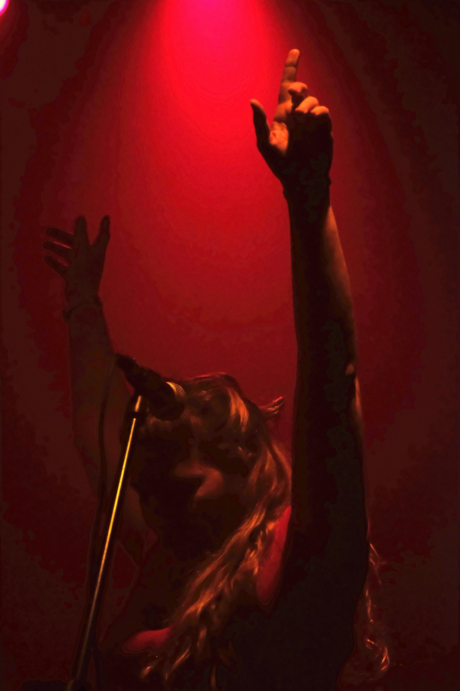

MARIA
ALLEVATO
Cantante, compositora y maestra de Canto
Bio
Soy María Allevato Majewski. Nacida en Capital Federal, Buenos Aires, Argentina.
Crecí en un entorno familiar lleno de música y elegí seguir este camino porque siento que en él se alinean mi sensibilidad y la forma que tengo de ver el mundo. La música es uno de los pilares fundamentales en mi vida.
Canto, toco guitarra, el teclado y algunos otros instrumentos que exploro de manera intuitiva, como quien dice “orejeando”. Decidí formalizar el oficio estudiando el profesorado de Canto en la Escuela de Música Popular de Avellaneda (EMPA).
Formé parte de dos proyectos musicales importantes en mi vida, como “Locos Buenos” y “Tupac Band”. Actualmente participo de las voces en Karamelo Santo
Hace algunos años comencé a estudiar la carrera de Psicología en la UBA, motivada por mi interés en los procesos psíquicos y en cómo estos pueden llevarnos tanto al padecimiento como a la transformación del mismo, creo y confío en que la música también puede colaborar en la transformación de estados del ánimo y del ser.
Desde esta mirada y desde mi propia experiencia confío y me apoyo en el poder que la música tiene, para armar y compartir mis clases de canto.
Comencé a dar clases en 2015. A lo largo del tiempo enseñé guitarra, ukelele, teoría musical y canto, aunque finalmente elegí enfocarme en la voz, porque es el punto donde mis dos grandes pasiones se encuentran, la música y la psicología.
La voz es el instrumento primitivo por naturaleza. Siempre estuvo y está ahí disponible para todxs. Entre muchas definiciones que he leído, hay una que me acompaña especialmente: “la voz es la chimenea del alma”.
Todo en nuestra voz habla, incluso lo no dicho. Por eso me gusta trabajar para que las voces que llegan a mis clases puedan expresar libremente todo lo que tienen para decir. Y cuando a esa expresión se le suman la emoción y el sentido, se produce una comunión perfecta que —al menos para mí— vuelve única a la música.
Entonces, ¿quién soy y qué hago? Soy cantante, guitarrista, compositora, docente de canto, estudiante de psicología, artesana y aficionada a la cerámica. Doy clases de canto en el living de mi casa, en Caballito, en donde intento que el encuentro de otrxs con la música y la voz sea un espacio seguro, amoroso y empático
¡Te invito a probar esta experiencia!
Musica
Actualmente formo parte de las voces de “Karamelo Santo”, banda de los años 90´s que fusiona el rock, reggae, ska y puk con ritmos latinoamericanos.
También anfitriono un “Fogón” con dos amados amigos y enormes músicos, los primeros viernes de cada mes en La plapla, un hermoso lugar entre caballito y paternal.
El fogón está pensado como un espacio para compartir la música entre todxs lxs presentes, con un equipo de "fogonautas" que abrimos la noche y acompañamos durante toda la velada. Podés venirte con tu instrumento, tu voz, o simplemente con ganas de escuchar y canturrear desde tu lugar. La idea siempre es el encuentro, el disfrute y la red.
El próximo fogón sera el viernes 6 de marzo.
Toda la info de fechas la encontrás en mi instagram.
Agenda
Fechas de proximos shows, talleres y eventos.
Galeria
Fotos y videos de presentaciones.
Con un máximo de 5 personas, son clases de 90min una vez por semana. Donde trabajamos de manera grupal la primer parte de la clase, con entrada en calor y vocalizaciones y luego cada unx tiene un momento para trabajar su cancion de manera individual.
Son clases de 60min, una vez por semana donde nos enfocamos en la técnica aplicada a canciones que te gusten cantar.
Si estás por grabar tus canciones o un repertorio elegido trabajamos para la puesta a punto antes de entrar a grabar.
Recorremos desde la técnica y la interpretación, pasando por las melodías y armonías, buscando tomar la mejor decisión en un trabajo de escucha y producción sobre cada canción.
Podemos pactar un pack de clases o un abono mensual.